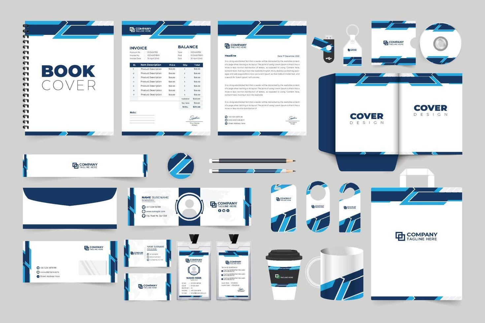

Selecciona una de las siguientes opciones para cada ítem, de manera que refleje con precisión la escencia de tu negocio.
Empecemos...
1. Explora las diferentes plantillas de Identidad Visual que hemos preparado para ti.
Usa los botones "Anterior" y "Siguiente" para verlas una por una. Cuando encuentres la que mejor presente tu,
logo, colores, tipografía y estilo visual, haz clic en "Seleccionar" .

2. Cada marca se representa de forma distinta.
Aquí te mostramos cuatro estilos visuales: algunos dan protagonismo al nombre,otros al
ícono, o combinan ambos.Revisa cada opción, lee su definición, observa el ejemplo
y selecciona el que mejor refleje la esencia de tu negocio.
3. Elige dos colores que definan
la personalidad de tu marca. Usa el cajón cromático al cuál le darás clic
y podrás escoger qué colores base podrán tener la paleta de colores de tu negocio, observa como combinan.
(Recuerda, cuando abras el cajón cromatico, escoge le color y luego seleeciona afuera del cajón para que te muestre cuál escogiste en el círculo)
Cuando los tengas listo dale clic al botón "Confirmas selección"